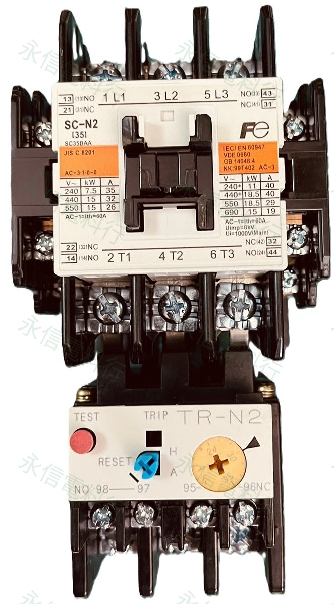
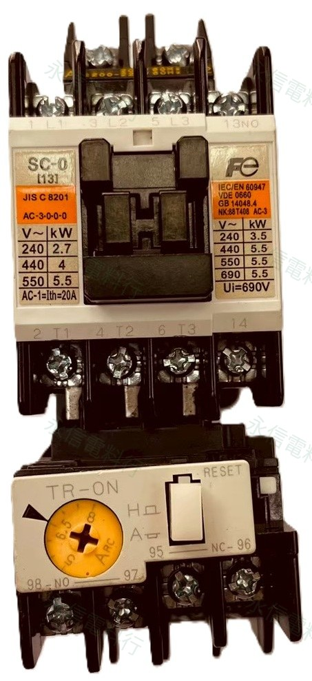
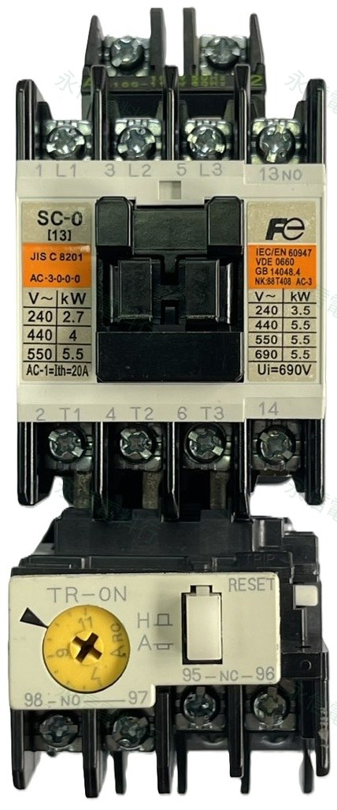
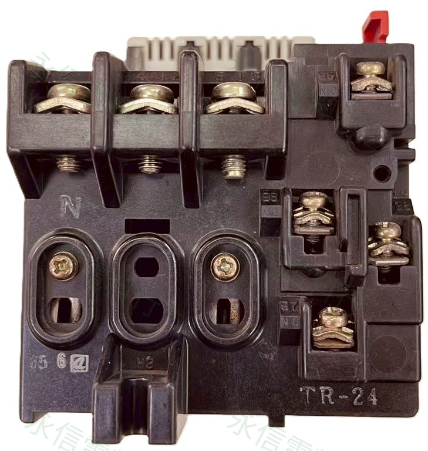
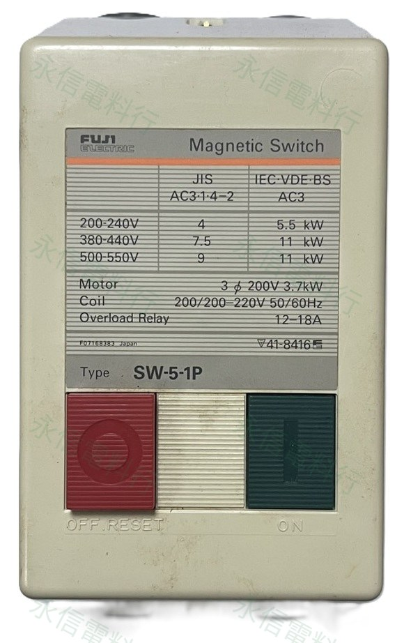

FUJI MAGNETIC STARTERS
富士電機電磁開關／磁力起動器
整理 SW 系列與接觸器＋熱動過載繼電器組合。除了線圈電壓，也必須同時核對內部接觸器完整型號與 OL 調整範圍。
 5 個商品頁完整型號逐碼核對
5 個商品頁完整型號逐碼核對MODEL CATALOG
已建立商品
線圈／替代提醒
富士標準 SC-N1～SC-N5A 與 SC-N6 以上 SUPER MAGNET 的線圈控制架構不同。舊型／新型、AC／DC、控制電壓與附件都必須依完整型號確認，不能只用安培數或外觀判定替代。

富士電機 FUJI ELECTRIC
SC-N2 AC110V + TR-N2 24–36A
電磁開關／磁力起動器組合｜AC110V
- 型號
- SC-N2
- 線圈／控制
- AC110V

富士電機 FUJI ELECTRIC
SW-0 AC220V｜OL 5–8A｜2HP
電磁開關／磁力起動器｜AC220V
- 型號
- SW-0
- 線圈／控制
- AC220V

富士電機 FUJI ELECTRIC
SW-0 AC220V｜OL 7–11A｜3HP
電磁開關／磁力起動器｜AC220V
- 型號
- SW-0
- 線圈／控制
- AC220V

富士電機 FUJI ELECTRIC
SW-1N（SC-1N 舊版）AC220V + TR-N2 24–30A
電磁開關／磁力起動器｜AC220V
- 型號
- SW-1N（SC-1N 舊版）AC220V + TR-N2 24–30A
- 線圈／控制
- AC220V

富士電機 FUJI ELECTRIC
SW-5-1P AC220V｜3.7kW｜OL 12–18A
箱型電磁開關／磁力起動器｜AC220V
- 型號
- SW-5-1P
- 線圈／控制
- AC220V